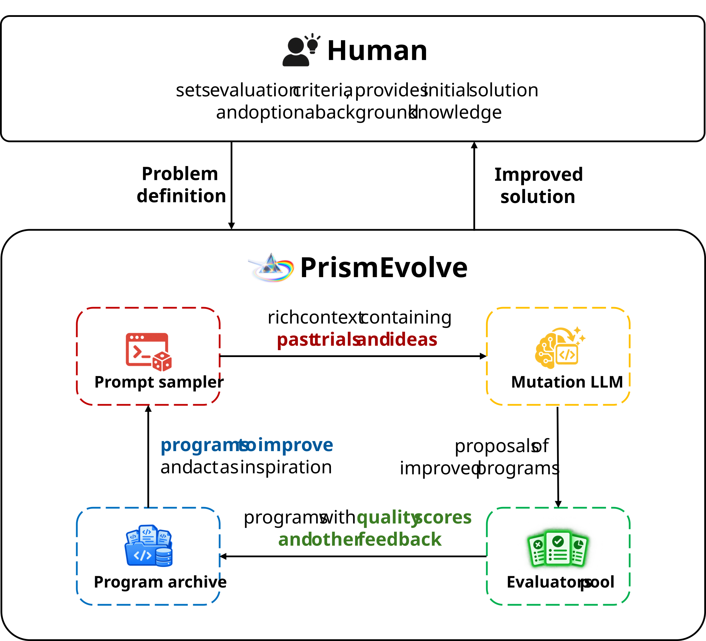
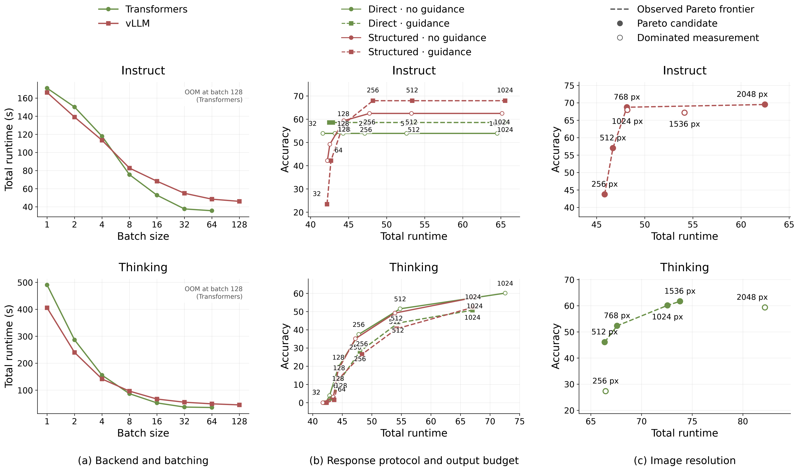
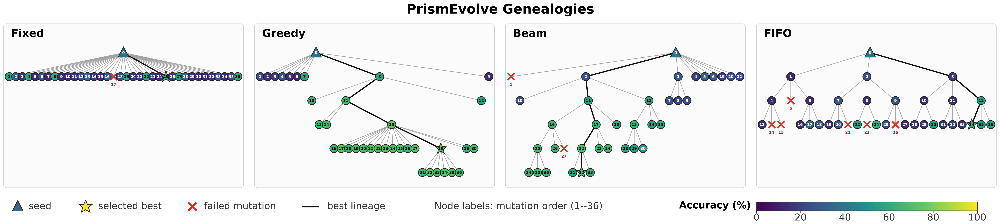
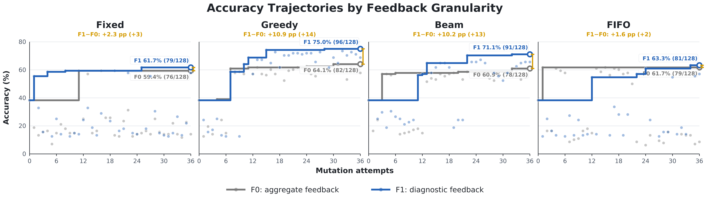
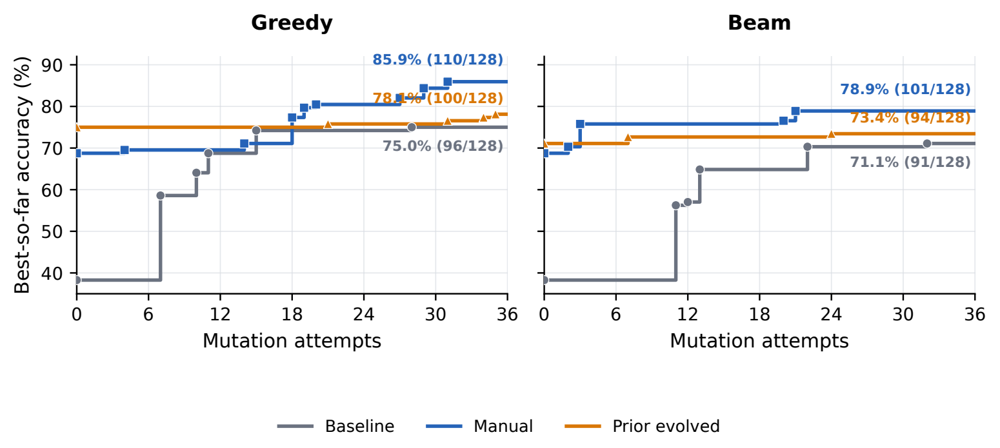
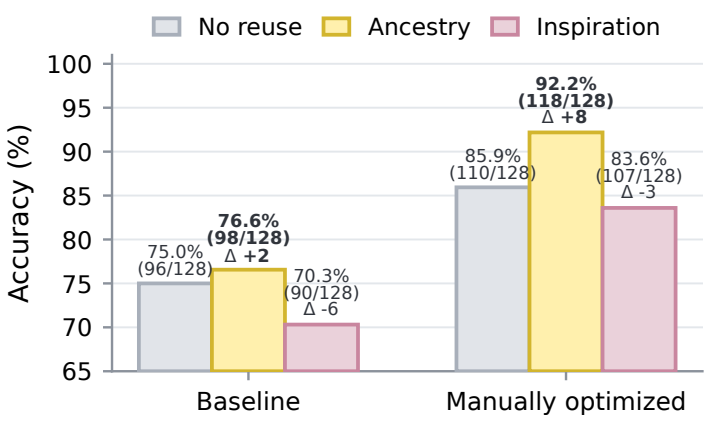
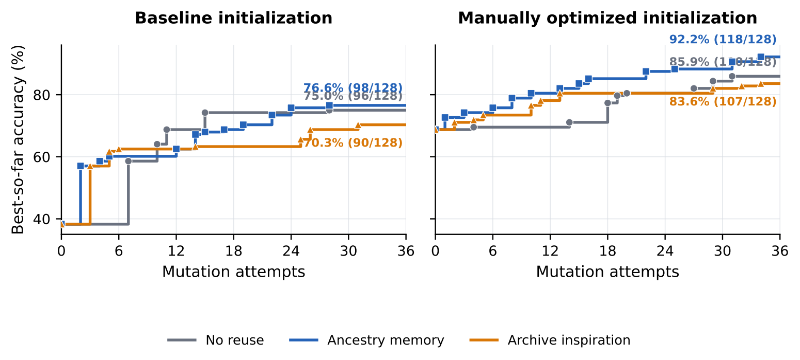

Qwen3-VL-2B-Instruct
Correct answers out of 128
Optimization: manual start → evolved88 → 110
Disjoint validation: manual → evolved79 → 95
A controlled study of the optimization loop behind evolving vision-language model inference programs.
Chung-Ang University
LLM-driven code optimization repeatedly mutates, evaluates, and selects programs, but the design choices that make improvements accumulate are not well understood. We introduce PRISMEVOLVE, a controlled framework for studying candidate selection, evaluation feedback, initialization, and reuse of prior search experience in vision-language model inference optimization. Across experiments on Qwen3-VL-2B-Instruct and Qwen3-VL-2B-Thinking, we find that strong evolution depends on selectively propagating promising descendants and giving the search policy feedback it can act on. Initial accuracy alone does not predict evolvability, and lineage-specific memory helps in our setting while random archive inspiration does not consistently help.
At each iteration, the sampler selects programs from the archive, an LLM proposes modifications, and evaluators score the candidates. Their scores and feedback determine which programs are retained and used as inspiration in later rounds.

Before comparing search strategies, the study constructs an interpretable, manually optimized program for each target model. The ablations below choose the inference backend, batching, response format, generation budget, and image resolution that define this starting point.

Fixed, FIFO, Greedy, and Beam use the same mutation budget but choose candidates differently. Greedy repeatedly expands high-scoring programs, while Beam preserves several promising candidates. The genealogy plot shows how these policies allocate attempts and which program lineages are inherited.

Aggregate feedback reports a program-level score; diagnostic feedback also identifies per-question predictions and errors. The trajectories connect this added information to search behavior: diagnostic feedback yields much larger gains for Greedy than for FIFO, so feedback quality and candidate selection work together.

The initialization experiment compares baseline, manually optimized, and previously evolved programs. A higher initial score does not guarantee a larger improvement: under Greedy search, the manual start makes larger gains than the already evolved program.

Correct answers out of 128
Correct answers out of 128
The reuse experiment compares no additional context, ancestry memory from the selected parent’s lineage, and an unrelated archive example. Ancestry memory reaches 118/128 with the manually optimized start; random archive inspiration does not consistently improve the endpoint.

Final scores do not show when those differences emerge. The complete trajectories below follow best-so-far accuracy across the mutation budget and show the effect of each reuse condition over time.
